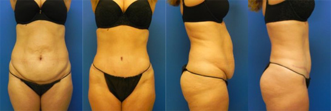

Yarrow Bay Plastic Surgery, serving the greater Seattle area including Kirkland and Bellevue, is one of the pre-eminent plastic surgery facilities in the Pacific Northwest. Founded in March of 2010 on the shores of Lake Washington, Yarrow Bay Plastic Surgery offers Board Certified surgeons, an accredited on-site operating room, a full-line Spa, and medical staff, specially trained in plastic surgery procedures.
Dr. Daniel J. Liebertz grew up in Beaverton, Oregon before moving to California to attend Santa Clara University, where he obtained both a Bachelor of Arts degree in Studio Art and a Bachelor of Science degree in Biology. He received his medical school education at the Keck School of Medicine of the University of Southern California.
He then completed his residency in Otolaryngology – Head & Neck Surgery at Wayne State University in Michigan. Dr. Liebertz was one of only 46 surgeons worldwide selected to gain further subspecialty fellowship training in Facial Plastic and Reconstructive Surgery at Emory University in Atlanta.
Meet Dr. LiebertzFacial plastic surgery can “turn back time” by reducing the appearance of wrinkles and lines, sun damage and sagging skin that can make you look angry, sad or tired. Learn more about some of the procedures we offer, helping you look as young and energetic as you feel.
Learn more“I love coming to Yarrow Bay — it's the perfect island of calm amidst a busy week. Yaicha has been my aesthetician for years, and she's amazing. She's patient, always fun to chat with, and so knowledgeable about any of my random skin questions. Seeing her for facials has helped make my skin look and feel great, and it was especially nice to come in for regular sessions before my wedding a few years ago. I'm so glad I found her and their lovely team and get to enjoy the Yarrow Bay spa experience!”
Dr. McMillan is certified by the American Board of Plastic Surgery, a key medical credential indicating her extensive training, as well as her commitment to ongoing educational and ethical standards in the field of plastic surgery.
 View Gallery